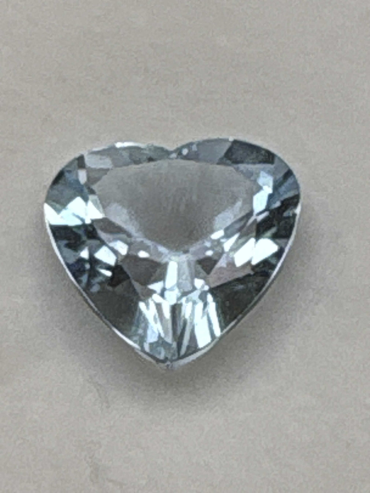

The Gem Drawer › No. 5

An 11 mm light blue heart cut, labeled “Top Gem” Santa Maria origin.
| Catalogue no. | #5 |
|---|---|
| As labeled | Aquamarine |
| Shape / cut | Heart cut |
| Weight | 3.6 ct |
| Measurements | 11 (heart) |
| Colour | Light blue |
| Clarity / condition | "Top Gem" quality per label (see notes); eye-visible inclusions present in photos; not professionally graded |
Interested in this stone, or in the collection as a whole? Terry VanWormer can answer questions about it.
Click here to inquireor email Terry directly at maxrebo34@gmail.com